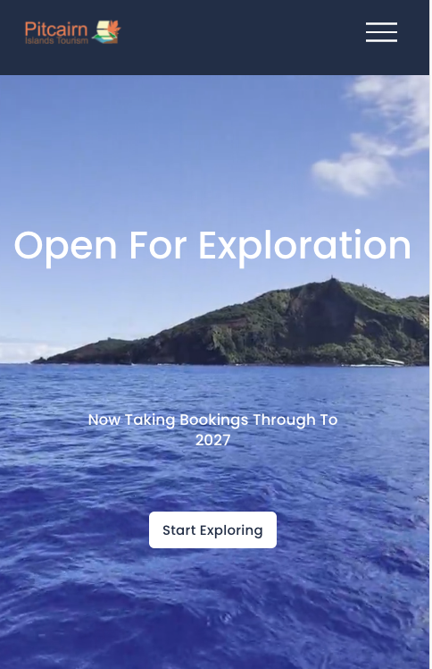
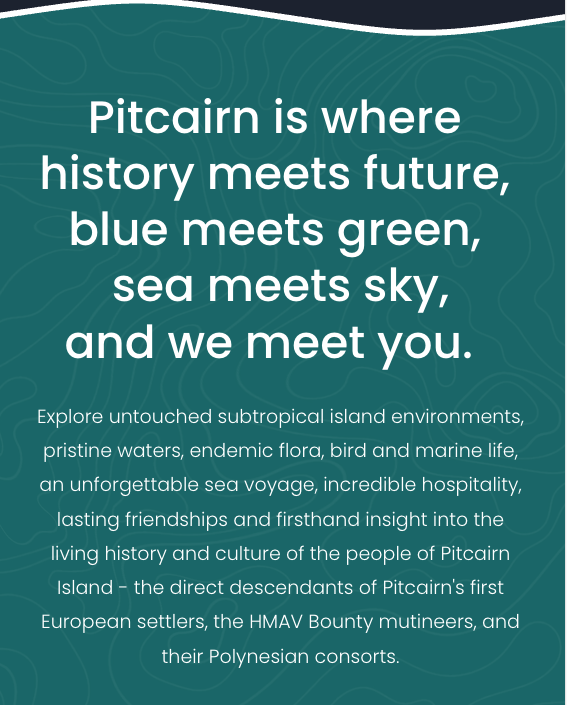
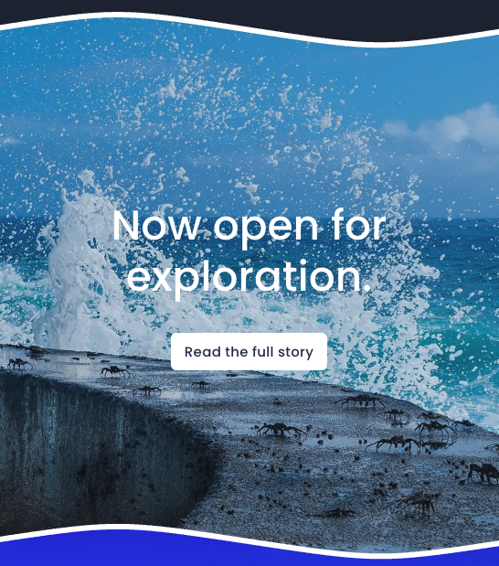
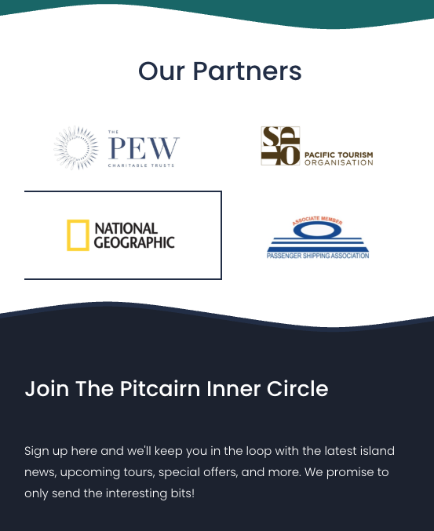

Trusted by mission-driven organizations worldwide

WORK THAT CONNECTS COMMUNITIES.
Inspire Life Skills Training
We recently helped this mission-driven nonprofit tell its 20th anniversary story across video, email, social media, its website, fundraising and a sold-out anniversary gala. We transcribed the anniversary interviews and created a library of written stories, quotes, website content and social material the organization could continue using.
MidSouth Development District
Blues Backroads had a tourism website built on WordPress that had become harder for the team to manage. We moved them off WordPress onto a more user-friendly, easier platform customized for them — migrating existing content, protecting important SEO, rebuilding itineraries and maps, streamlining events, and creating a custom event submission system for local partners.
"I also really appreciate that I didn't have to worry about it, that you had it covered. That was exactly what we wanted."
Andean Health & Development
After producing a four-minute fundraising video, we repurposed that footage to create a full year of social media, email, and website videos in landscape, square, and vertical formats — turning one shoot into 52 separate videos, roughly one for every week of the year.
Lutheran World Relief
A full video production project for LWR Farmers Market Coffee — from script development and on-location filming to editing, music, and final delivery — bringing the story of farmer partners in Nicaragua to life for a U.S. audience. Our broader work has included on-location human storytelling across Kenya, Peru and beyond, telling personal stories respectfully while connecting individual voices to a larger mission.
The Lobiko Initiative
Lobiko was doing transformative work — advancing the wholistic development of children in the Congo — but their website didn't reflect it. Static, under-styled, and misaligned with the impact they were making.
We extended their existing brand and logo to a full web identity — dynamic sections, bold storytelling, and a design that puts the kids front and center. Brand rebuilt. Videos re-edited. Story sharpened.
The Sigmund Project
The Sigmund Project wanted to create a sustainable revenue source that could help cover its nonprofit operating costs and reduce its reliance on donor funding. We developed the RFP Hub, a paid digital platform that connects tourism businesses with relevant contract opportunities — including business and revenue strategy, website and member portal development, technology and product management, email marketing, SEO and Google Ads. Now in its third year, it is projected to generate approximately $50,000 in 2027 revenue.
Pitcairn Islands Tourism
We provide full-service communications support for one of the world's most remote communities — website management, email marketing, social media, public relations, tourism marketing and digital communications.
We also developed and automated a paid newsletter program that supports local journalism on Pitcairn Island. Revenue from the newsletter covers the salaries of two on-island staff members. The previous process was managed manually; we built an automated system for subscriptions, payments, renewals and delivery, making the program more sustainable and reducing the administrative work required from the island team.
Why it matters: We understand how to work with remote communities, coordinate across different stakeholders and use communications to support local jobs and long-term sustainability.




Let's make
something
MEANINGFUL.
Schedule a time that works for you
WHAT OUR
CLIENTS SAY
Good work is great.
Good work with good people is even better.
Working with Meaningful Marketing was a genuine pleasure. Strategic, responsive, and they delivered exactly what they promised. You can tell they have been doing this for a while. They get it.
Their expertise in delivering high-quality video content was impressive. Their ability to see the content potential in existing footage and turn it into a full campaign is a real skill.
Their AI consulting and team training sessions were the most practical and useful professional development our team has had. We left with tools we could use immediately.
They don't just deliver content. They deliver strategy that works. Their ability to understand our goals and translate them into a clear narrative is a consistent strength.
Meaningful Marketing are excellent at what they do and a pleasure to work with. I found myself looking forward to our calls and leaving each one with clear next steps.
They took our team's idea, which was really only an idea, and brought it to life across video, digital, and live channels. Executed cleanly and on brief.